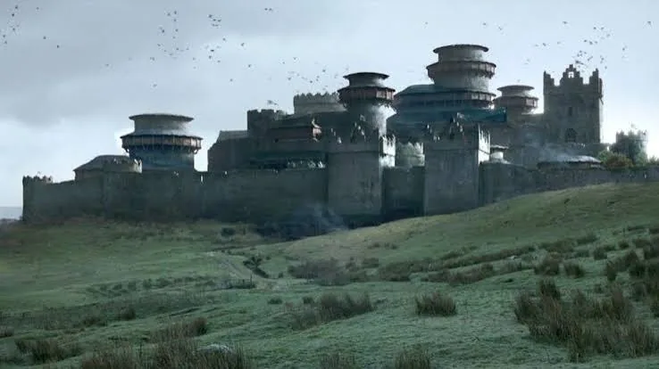
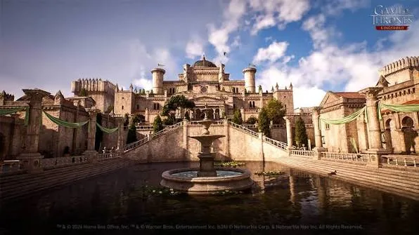
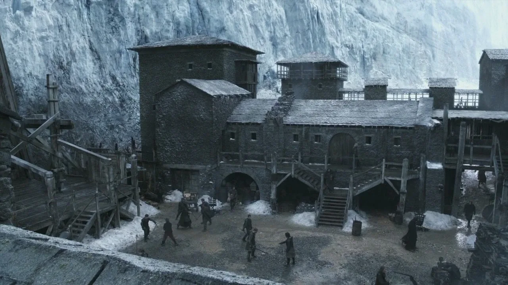
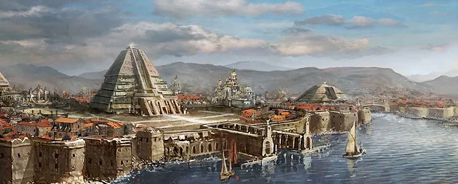

King's Landing
Seven hills, one throne, and a smell that visitors never stop mentioning. The capital where every plot in the realm eventually comes to collect its debts.
eight places worth the trip
Tilt the cards — every capital in Westeros and Essos was built to survive something: sieges, tides, or its own ambition.
Important locations from the Game of Thrones era.
Seven hills, one throne, and a smell that visitors never stop mentioning. The capital where every plot in the realm eventually comes to collect its debts.

Warmed from below by hot springs and warmed from within by stubbornness. The North's oldest seat has outlasted kings, sieges, and at least one wedding it should never have hosted.
A city of canals founded by escaped slaves, guarded by a bronze titan, and quietly run by a guild that will kill you for the right price and the right god.

Black volcanic stone, gargoyles that seem to watch the sea a little too closely, and the ancestral seat of the only family that ever needed a landing pad.

Terraces, orchards, and more flowers than any war-torn continent has a right to. The Reach's capital looks soft right up until it isn't.

Home of the Night's Watch, sitting under seven hundred feet of ice with one very large elevator and a job nobody particularly wants.

A pyramid city in Slaver's Bay that briefly became a foreign queen's accidental capital while she figured out how to actually govern something.
Dorne's capital, built for heat rather than defense — because the desert around it already does most of the defending.